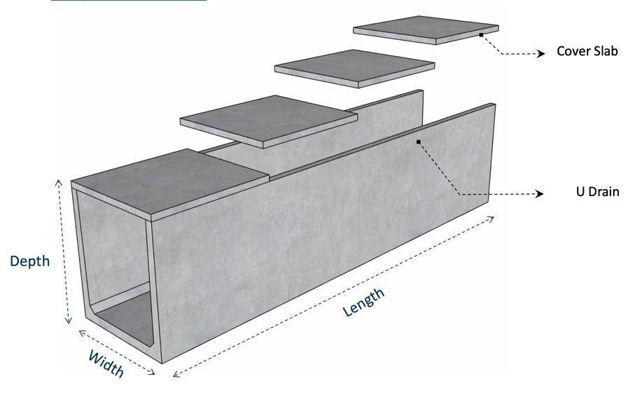
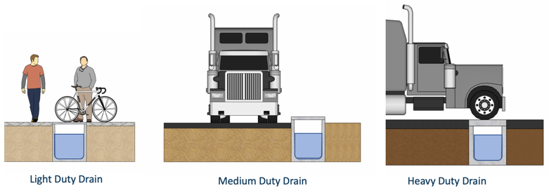
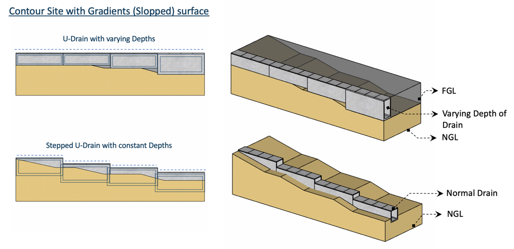

Precast U-Drains
‘U’-Drains can be used for indoor and outdoor applications. They come with cover slabs, which are designed for various load conditions.
Drains are factory made, cast in a controlled environment, ensuring superior quality and suitability for fast-paced construction.
- Superior Quality
- Well-Engineered
- Easy and Quick to Install
Dimensions
| S.No | Width (mm) | Height (mm) |
|---|---|---|
| 1 | 450 | 450 to 600 |
| 2 | 600 | 450 to 600 |
| 3 | 600 | 450 to 1000 |
| 4 | 1200 | 600 to 1000 |
| 5 | 900 | 600 to 1000 |
Standard Cover Slab thickness: Light Duty- 50mm | Heavy Duty- 150 to 170mm
Material Specification
- Concrete: Grade 40 to Grade 45
- Steel: Fe500
- Nominal cover: 25mm
Requirements
- Density of backfill soil should be minimum 18 kN/m3
- Backfill material adjacent to side wall should be of granular type
- Backfilling and compaction to be performed layer by layer alternatively on either side of the drain until the top of the drain.
Design Criteria
Structural design of the ‘U’-Drains is in accordance with:
- BS 5400 : Part 4 : 1990 | BD 31/01 | MS 1293 : Part 1 : 1992
- IRC 6 – Cl 214.1.1.3 | IS 456 : 2000
Loads
Light Duty
Designed for lateral earth pressure and a live load of 150 Kg/Sqm. Cover slab only supports human load.
Medium Duty
Designed for lateral earth pressure, live load surcharge (1.2 m earth fill), and adjacent vehicular traffic. Cover slab supports only human load.
Heavy Duty
Designed for lateral earth pressure, live load surcharge, and heavy vehicles. Cover slab designed for heavy vehicle loads.
Laying / Positioning of ‘U’-Drains
Based on the topography of the land, the drains will be laid. Inner slope for free flow of water can be achieved by laying Plain Cement Concrete if needed. Drain levels can be adjusted according to land undulations.
Erection of ‘U’-Drains
Soil is excavated to the required depth and leveled. If soil is poor, PCC is laid. Drains are placed along the leveled surface. ‘U’ bars are placed in slots and grouted to prevent movement. Joints are filled with grout.
Truck Unloading
Base Preparation and Placing
Jointing

Cover Slab Unloading
Cover Slab Laying
TVK Precast ’U’ – Drains are casted as a monolithic piece and there will be no chance for leakages in the bottom joints of vertical wall and base slab, whereas in conventional precast, bottom slab is casted separately and then the walls are casted separately, thereby leaving a cold joint and hence there is every chance that water will leak through the joints. When there are heavy rains, we will not be able to know if the water is coming from the road or from the joints.
Constructing drains in the conventional way will be difficult and time consuming.
Precast ‘U’ – Drains are easy to erect, quick to complete strong and durable.